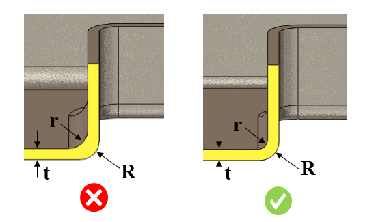

推奨されるコーナー半径は、ユーザーが指定した値に従う必要があります。
肉厚の急激な変化を避けるため、すべてのコーナーに半径を付与する必要があります。肉厚が急変すると応力集中が発生し、コーナー部にポロシティが生じてその部分が弱くなります。外側の鋭いコーナーは、金型内で局所的な熱および応力の集中点となり、金型の割れや早期破損を引き起こす可能性があるため好ましくありません。
一般的なガイドラインでは、コーナー部の肉厚（R-r）は 1.0～1.2 の範囲とすることが推奨されています。

R = 外側半径
r = 内側半径
t = コーナー部の肉厚
R-r = コーナー半径の差